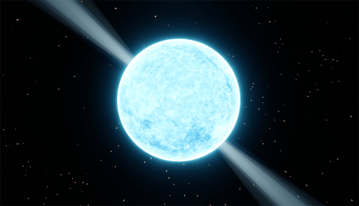

In the mid 19th century, a strange idea was growing heavy in the ether: There might be dimensions beyond the three we experience. To some—including eminent scientists of the day—these were the realms of spirits and the supernatural, accessed through tabletop seances. To Charles Hinton, a British mathematician and science-fiction writer at the time, it was something that could be puzzled out, modeled in things like his “tesseract” four-dimensional cube.
In the intervening century and a half, spiritualism and mainstream science having parted ways, the serious search for these extra dimensions has only intensified. Lately, physicists have proposed a new way to “see” into a new dimension—by looking deep into the hearts of collapsed, dead stars that have been behaving strangely.
The concerted scientific journey into extra dimensions began with Hermann Minkowski, Einstein’s former teacher, who realized that “space by itself, and time by itself, have vanished into the merest shadows” and that only a unification of them, spacetime, exists. Spacetime means that the universe truly is four-dimensional, just that one of the dimensions is that of time, rather than an additional one of space. One extra dimension discovered.
But might there be more?
Beginning in the middle of the 20th century, scientists began to speculate that there might indeed be more to the universe. And that speculation was born from an unlikely source: the astounding weakness of gravity.
If the “braneworld” hypothesis is true, then we have no idea just how magnificent the universe is.
The force of gravity is weak. And not just a little bit weak. It’s so much weaker than the other three fundamental forces—electromagnetism and the strong and weak nuclear forces—that it’s almost impossible to provide analogies. Gravity could be a trillion trillion times stronger than it is, and it would still be the weakest of the forces by many orders of magnitude.
The origin of the strengths of the fundamental forces of nature remains an outstanding problem in physics. We don’t know why electromagnetism has the strength that it does, why the strong force is so strong, and why the weak force is so weak. But gravity sticks out like a sore thumb. All the other forces may be weaker or stronger than the others, but they’re at least in the same ballpark. Gravity isn’t even on the same planet.
The thinking goes that if we can understand why gravity is so especially weak, we might be able to use that as a way to discern why the other forces are so strong.
And maybe the answer lies in an extra dimension.
In 1999, theoretical physicists Lisa Randall and Raman Sundrum proposed a wild restructuring of the cosmos. In their model, what we call the universe is really a “brane”—a three-dimensional expansion of our usual conceptions of a membrane.
But our brane is not the entire universe. In their model, it’s embedded in something much larger, dubbed the “bulk.” The bulk has an extra spatial dimension, and our brane universe floats along inside of it like a piece of paper caught in the ocean currents. We can’t see the bulk, touch the bulk, experience the bulk, or otherwise interact with the bulk because our entire universe—all the particles and forces of nature—are restricted to life on the brane.It stretches the mind in a way that’s almost a throwback to the early days of the search for an extra dimension—when, in 1884, Edwin Abbot published his satirical book Flatland: A Romance of Many Dimensions, in which geometric figures inhabit a two-dimensional universe that is rocked when a sphere, a three-dimensional object, intersects with their world.

WEIRD VIBRATIONS:Neutron stars' super-strong jets of radiation might be made narrower by an additional dimension we haven't otherwise been able to detect. A new X-ray telescope from the European Space Agency might reveal more. Image by ART-ur / Shutterstock.
The brane-bulk model is a speculative idea for sure, but a fun one. Like the beleaguered citizens of Flatland, if the “braneworld” hypothesis is true, then we have no idea just how magnificent the true extent of the universe is.
And so it’s worth finding ways to investigate whether this literally outside-the-box idea has any merit—to find if we can poke our heads into the fifth dimension. Physicists just need some way to pierce the veil of the brane and peer into the realm of the bulk. To try this, they have enlisted gravity.
Gravity, the thinking goes, can escape our brane and extend into the bulk. That explains why it’s so weak. All the other forces must play in only three spatial dimensions, while gravity can extend itself out to four, spreading itself much too thin in the process.
Physicists can try to peek into the extra dimensions of the bulk at tiny scales using experiments that can fit on a tabletop—granted in setups much different than 19th-century spiritualists’ gatherings. These exquisite devices test the strength of Earth’s gravity as microscopic objects move over minute distances. They then compare the movements of those particles to see if there are any deviations from the gravitational phenomena predicted by Einstein’s theory of general relativity. So far, no evidence for extra dimensions has emerged from those experiments.
So other physicists have turned away from the tabletop and to the stars for answers. Specifically, neutron stars. These are the ultra-dense leftover cores of giant stars. This tremendous density makes them excellent laboratories for studying gravity under extreme conditions, where it might crack open our historical models.
If our running knowledge of gravity is mistaken, and our universe is really a brane floating in the bulk, then it might just show up in ever-so-slight differences in the behavior of neutron stars. This is because the brane-bulk interaction might change how gravity is working, ever so slightly—but just enough for us to detect it in those extreme environments.
Neutron stars are perhaps the most exotic objects in the entire universe known so far.
In particular, the extra dimension could make itself known by supplying an extra source of energy, something that physicists have dubbed “dark radiation,” and an extra source of pressure, called “dark pressure.” Dark radiation acts like an invisible form of light that can carry and transport energy; dark pressure is an extra source of support against the usual inward pull of gravity. Both of these appear as terms in the modified equations of gravity, additions that are absent in our usual conceptions of general relativity, our current best treatment of the gravitational force.
Which brings us back to neutron stars. Neutron stars are perhaps the most exotic objects in the entire universe known so far—rivaling even black holes. They are best described as atoms the size of cities, composed of ultra-dense nuclear matter compressed into even more incomprehensible densities. A single teaspoonful of neutron star guts would outweigh the Great Pyramid at Giza. Their gravities are so strong that they can force light to orbit around them. If the twin phantoms of dark radiation and dark pressure from the additional dimension are in fact changing how gravity works, it could influence how compact neutron stars can be, how efficiently they radiate heat, and even the arrangement of their internal composition. Which would be helpful because some neutron stars seem to be acting in odd, unexpected ways.
In 2019, the LIGO detector, a pair of kilometer-long laser interferometers in Louisiana and Washington, measured gravitational waves emanating from the merger of a black hole with … something else. The black hole had a mass of around 23 solar masses. Its companion had a mass of only 2.6 solar masses. That’s far too small to be a black hole … but also a little too big to be a neutron star. Which sent physicists searching for an explanation for the massiveness of the other, mysterious object.
Recent calculations have shown that an extra dimension, in the form of bulk, can potentially explain the extra heft of that companion. It’s not a slam-dunk case, but it is an intriguing hint.
Other recent observations of binary neutron star systems have revealed odd fluctuations in brightness that are almost, but not quite, perfectly regular. While researchers think that the complex gravitational interaction between the neutron stars and the material surrounding them gives rise to these almost-periodic fluctuations, they haven’t been able to pin down the exact cause. Some theorists have proposed that it is nothing less than the brane-bulk interaction that changes gravity just enough to create this off-beat rhythm.
And even beyond gravity, other forces might also be giving hints of this extra dimension. Neutron stars can host the strongest magnetic fields in the known universe, boasting strengths up to quadrillions of times greater than the Earth’s field. These magnetic fields are strong enough to literally rip apart anything that wanders too close. As the neutron star rotates, the spinning super-strong magnetic field creates an electric field, which spirals into a beam of radiation that jets out of the axis of the star. Physicists discovered that the braneworld would weaken the interplay of magnetic and electric fields enough to lower their strength, leading to a narrower beam of radiation. While this particular hypothesis hasn’t been tested yet, it could be soon with a new X-ray telescope from the European Space Agency.
This effect cannot be replicated in the laboratory, as attempts to create magnetic fields even billions of times weaker than these make all of our equipment melt. So physicists will continue to keep their eyes on the stars for a window into an extra dimension. 
Lead image: Jurik Peter / Shutterstock
References
- Original Article: https://nautil.us/neutron-stars-hint-at-another-dimension-1202180/